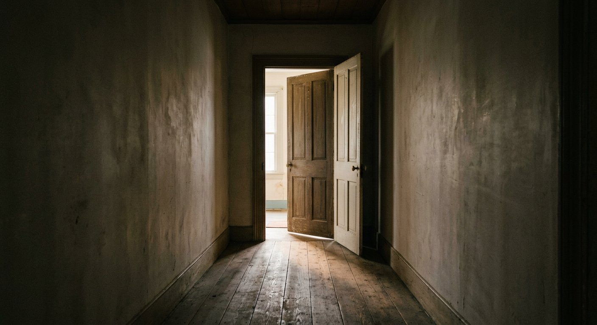
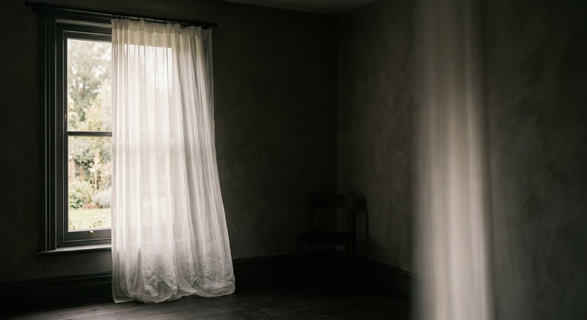
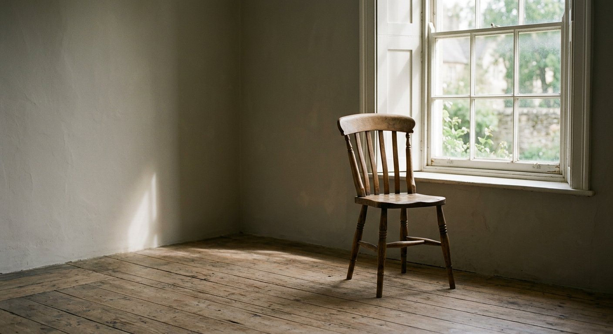

Reference · 02
The room, and
what is in it.
Eight photographs. Almost nobody in them. This is a record of the place rather than a gallery of the work — the light, the linen, the chairs, the water.
A treatment room says more about how someone works than a description does. Nothing here is staged for a brochure; it is simply what is there.


